Contents
clear all
import_excel_data;
Plotting pole figures from EBSD data
p1=Miller(0,0,0,2,ebsd('Zirconium').CS);
p2=Miller(1,0,-1,0,ebsd('Zirconium').CS);
figure(1)
plotPDF(ebsd('Zirconium').orientations,[p1 p2])
figure(2)
plotPDF(ebsd('Zirconium').orientations,[p1 p2],'points','all','markerSize',3)
figure(3)
plotPDF(ebsd('Zirconium').orientations,[p1 p2],'contourf',0:1:6)
colorbar;
I'm plotting 416 random orientations out of 213854 given orientations
You can specify the the number points by the option "points".
The option "all" ensures that all data are plotted
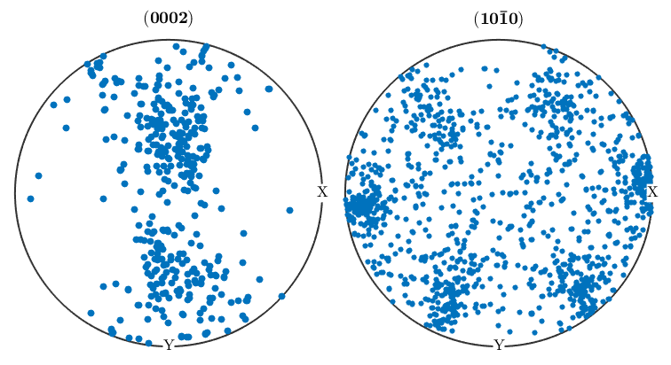 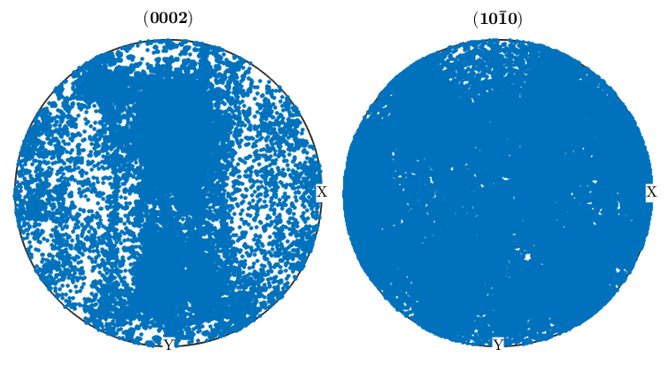 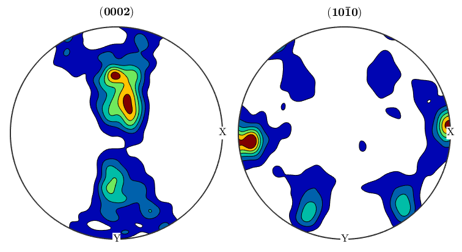
Inverse pole figures
[grains,ebsd.grainId,ebsd.mis2mean] = calcGrains(ebsd('indexed'),'angle',5*degree);
figure(1)
plotIPDF(grains(grains.phase==1).meanOrientation,xvector,'contourf')
colorbar;
figure(2)
plotIPDF(grains(grains.phase==1).meanOrientation,yvector,'contourf')
colorbar;
figure(3)
plotIPDF(grains(grains.phase==1).meanOrientation,zvector,'contourf')
colorbar;
dir=vector3d(1,1,0);
figure(4)
plotIPDF(grains(grains.phase==1).meanOrientation,dir,'contourf')
colorbar;
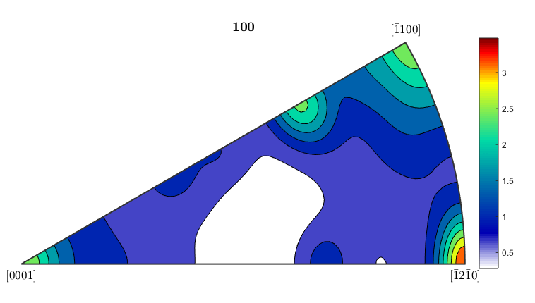 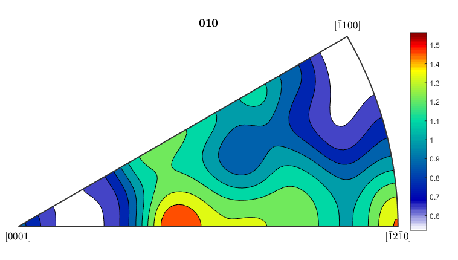 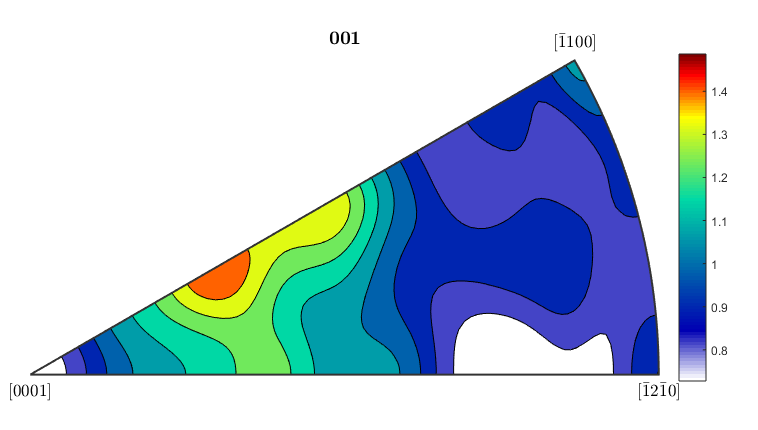 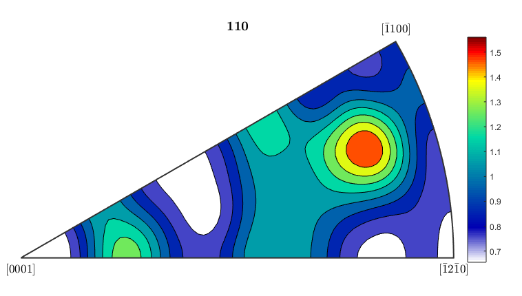
Calculating an Orientation Distribution Function from EBSD data
alphaODF=calcODF(ebsd('Zirconium').orientations,'halfwidth',10*degree)
betaODF=calcODF(ebsd('ZirconiumBeta').orientations,'halfwidth',10*degree)
p1=Miller(0,0,0,2,ebsd('Zirconium').CS);
p2=Miller(1,0,-1,0,ebsd('Zirconium').CS);
p1beta=Miller(1,1,1,ebsd('ZirconiumBeta').CS);
p2beta=Miller(1,-1,0,ebsd('ZirconiumBeta').CS);
figure(1)
plotPDF(ebsd('Zirconium').orientations,[p1 p2],'contourf',0:1:6)
colorbar;
figure(2)
plotPDF(ebsd('ZirconiumBeta').orientations,[p1beta p2beta],'contourf',0:1:3)
colorbar;
[cor_alphaODF, rotAlpha]=centerSpecimen(alphaODF);
[cor_betaODF, rotBeta]=centerSpecimen(betaODF);
rotAlpha
rotBeta
rotAlpha.angle/degree
rotAlpha.axis
rotBeta.angle/degree
rotBeta.axis
figure(3)
plotPDF(cor_alphaODF,[p1 p2],'contourf',0:1:6)
colorbar;
figure(4)
cor_betaODF=rotate(betaODF,rotAlpha);
plotPDF(cor_betaODF,[p1beta p2beta],'contourf',0:1:3)
colorbar;
alphaODF = ODF (<a href="matlab:docmethods(alphaODF)">show methods</a>, <a href="matlab:plot(alphaODF)">plot</a>)
crystal symmetry : Zirconium (6/mmm, X||a*, Y||b, Z||c)
specimen symmetry: 1
Harmonic portion:
degree: 28
weight: 1
betaODF = ODF (<a href="matlab:docmethods(betaODF)">show methods</a>, <a href="matlab:plot(betaODF)">plot</a>)
crystal symmetry : ZirconiumBeta (m-3m)
specimen symmetry: 1
Harmonic portion:
degree: 28
weight: 1
searching for a first two fold symmetry axes
fit: 73%
fit: 81%
searching for a second two fold symmetry axes
fit: 40%
fit: 40%
searching for a first two fold symmetry axes
fit: 5.8%
fit: 7%
searching for a second two fold symmetry axes
fit: -12%
fit: -12%
rotAlpha = rotation (<a href="matlab:docmethods(rotAlpha)">show methods</a>, <a href="matlab:plot(rotAlpha)">plot</a>)
size: 1 x 1
Bunge Euler angles in degree
phi1 Phi phi2 Inv.
195.759 24.3131 170.364 0
rotBeta = rotation (<a href="matlab:docmethods(rotBeta)">show methods</a>, <a href="matlab:plot(rotBeta)">plot</a>)
size: 1 x 1
Bunge Euler angles in degree
phi1 Phi phi2 Inv.
273.467 16.099 90.3354 0
ans =
25.0610
ans = vector3d (<a href="matlab:docmethods(ans)">show methods</a>, <a href="matlab:plot(ans)">plot</a>)
size: 1 x 1
x y z
-0.946878 -0.213336 0.240645
ans =
16.5391
ans = vector3d (<a href="matlab:docmethods(ans)">show methods</a>, <a href="matlab:plot(ans)">plot</a>)
size: 1 x 1
x y z
0.0266052 -0.973203 0.228405
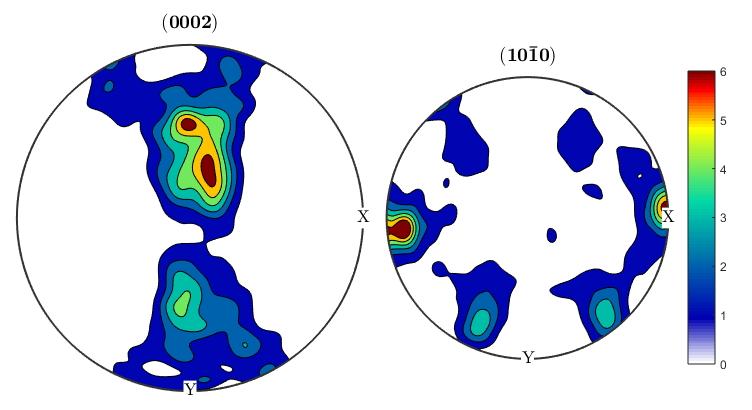 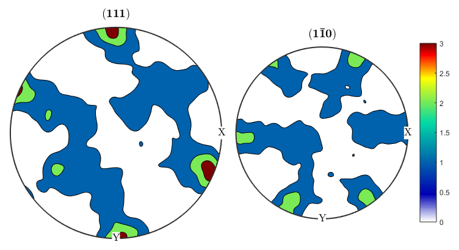 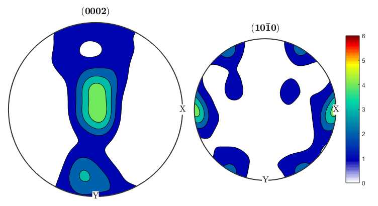 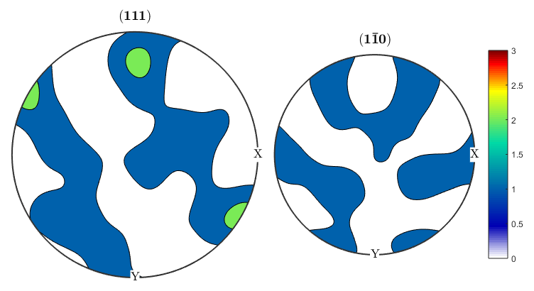